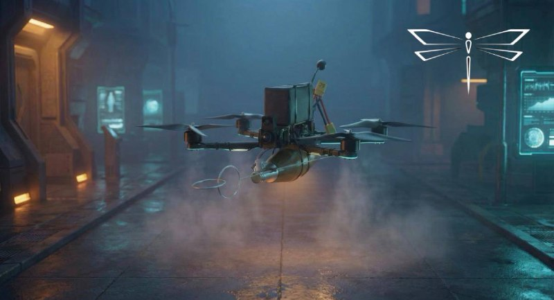
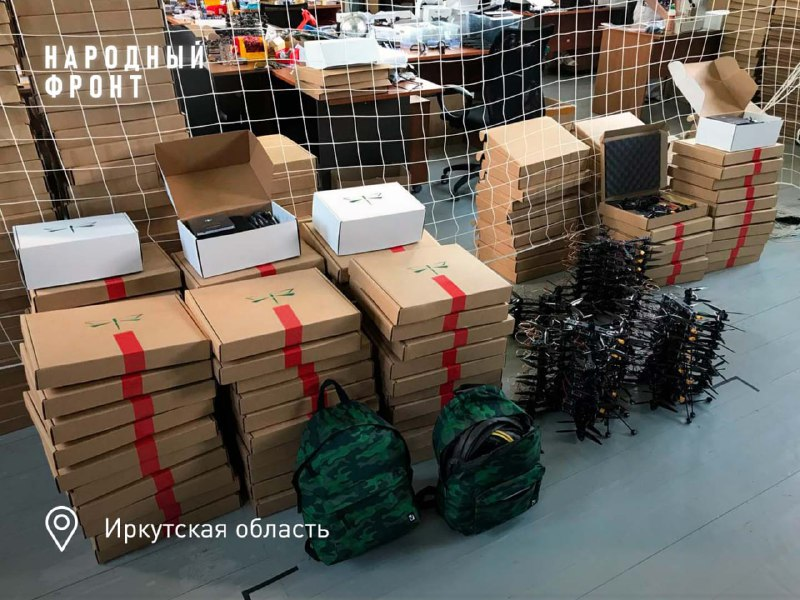
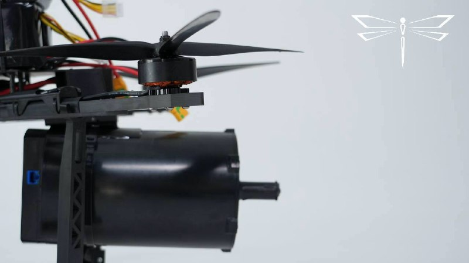
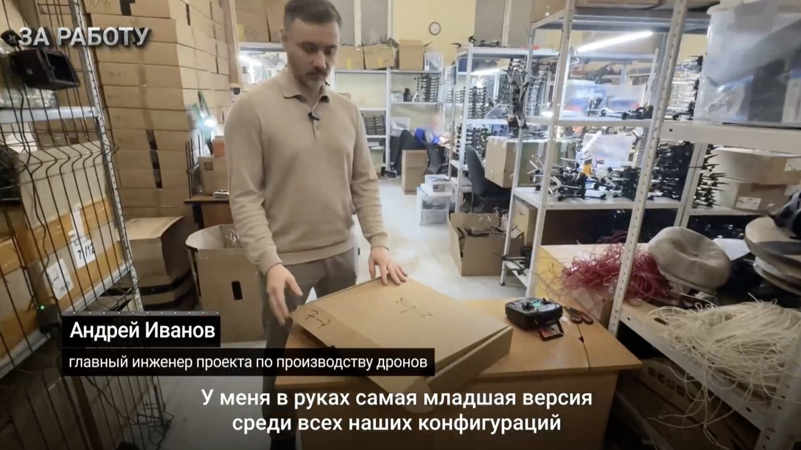
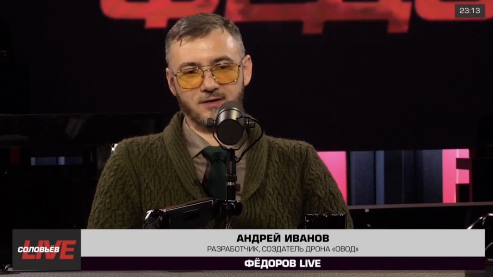
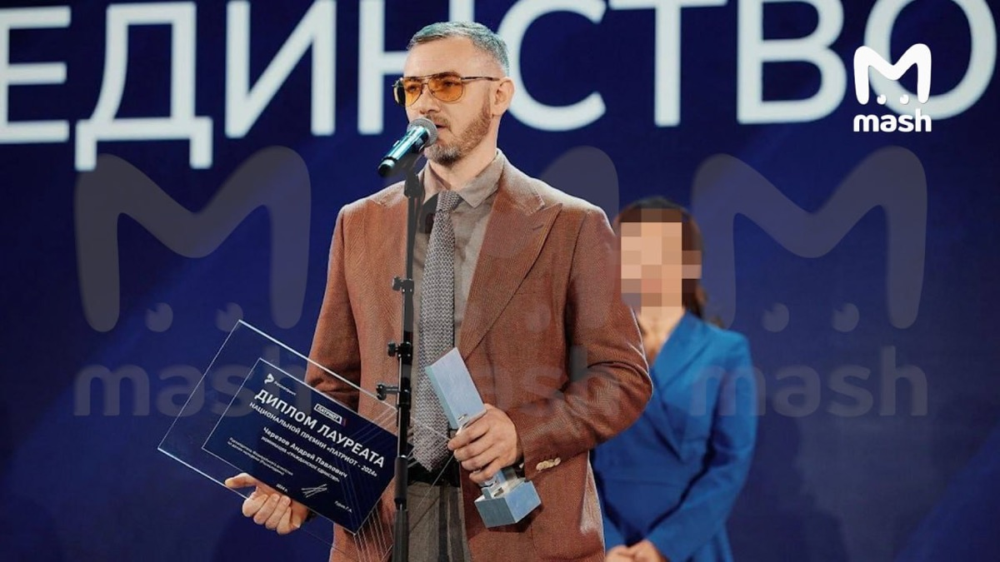

Company profile · РОЙ.МАРКЕТ investigation

At a glance
Ownership & corporate history
| Value | As of | Note |
|---|---|---|
| Черезов Андрей Павлович | 2022-09-28 | Должность: ДИРЕКТОР, личный ИНН 712802968839. Full signed ЕГРЮЛ выписка pulled 2026-09-07. |
| Черезов Андрей Павлович | 2024-05-08 | personal ИНН 712802968839; also sole founder — SAME person who wholly owns ООО «Воздушный трактат» (already verified this session), at the same Осиновая Гора address |
| Value | As of | Note |
|---|---|---|
| Черезов Андрей Павлович 100% (₽20 000) | 2024-05-08 | Full signed ЕГРЮЛ выписка pulled 2026-09-07 (egrul_vypiska_pull.py). |
| Value | As of | Note |
|---|---|---|
| 20000 | 2024-04-25 | Full signed ЕГРЮЛ выписка pulled 2026-09-07 (egrul_vypiska_pull.py). |
| Value | As of | Note |
|---|---|---|
| Тульская область, г. Тула, ул. Рязанская, здание 5Ж | 2026-04-01 | First street-level address on file (prior: village-level 'с. Осиновая Гора'), from a ГУ МЧС России по Тульской области 'профилактический визит' record (Apr 2026). |
Products
FPV kamikaze drone with neural-network-based autonomous targeting ("система самонаведения на основе нейросети"), deployed in Ukraine since 2023. Company e-mail domain (company@ovod71.ru) is literally the product brand.
s0526Fiber-optic-guided heavy FPV strike drone variant. Press-reported (2026-08-23 web search) >40km range record in the SVO zone and destruction of a Ukrainian ammunition depot in Sumy region (Aug 2026 coverage) -- not yet cross-checked against a primary source.
Наземный необитаемый робототехнический комплекс для безлюдной доставки и запуска FPV-дронов «ОВОД 10» в район выполнения боевой задачи. Совместная разработка ОВОДа и НРТК «Курьер». Действует на удалении до 20 км от операторов, запускает FPV-дроны с дальностью до 35 км — оператор может находиться на расстоянии до 55 км от цели. Успешно испытан в зоне СВО (30.07.2026). Планируется ИИ-управление.
s5446Financials
| Year | Revenue | Profit | Source |
|---|---|---|---|
| 2022 | — | ₽-35,000 | |
| 2023 | ₽110,147,000 | ₽6,733,000 | |
| 2024 | ₽561,552,000 | ₽81,457,000 | |
| 2025 | ₽1,310,635,000 | ₽27,965,000 |
Government contracts
State-program participation
Self-reported marketing claims
"Овод" – это новейший боеприпас квадрокоптерного типа: ведёт, как разведку, так и поражает цель."Ovod" is a state-of-the-art quadcopter-type munition: it conducts reconnaissance and also strikes the target. Quoted from a regional Народный фронт official (Елена Зубун) describing the first-ever shipment of 50 «Овод» kamikaze drones to the SVO zone, reposted on the channel's own account of the shipment. — 2023-08-17
Сейчас наши дроны на оптоволокне преодолевают расстояние до 40 км. Без красивых презентаций и сказок для телевизора. Просто инженерия, математика и русские мужики, которые умеют работать руками и головой.Right now our fiber-optic drones cover distances of up to 40 km. No pretty presentations or TV fairy tales. Just engineering, math, and Russian men who know how to work with their hands and their heads. Manufacturer's own technical/marketing claim about fiber-optic-guided strike-drone range, posted alongside a product close-up photo. — 2026-05-26
Произвели. Испытали. Применили. Разработкой и испытанием дронов ОВОД занимаются люди с реальным боевым опытом... Основатель ОВОДА с 2022 по 2026 год лично работал на многих направлениях от Крынок и Бахмута до Белгорода и Курска.Manufactured. Tested. Deployed. The people developing and testing OVOD drones have real combat experience... The founder of OVOD personally worked on many fronts from 2022 to 2026, from Krynky and Bakhmut to Belgorod and Kursk. Extended marketing narrative describing front-line field-testing as the company's core development method, including a joint trial with ФСБ ЦСН special forces. — 2026-07-08
Тяжелый ударный FPV-дрон «Провод» на оптоволокне отработал на рекордную для боевых условий дальность - 40 километров 400 метров и уничтожил там, на Сумском направлении, укропский склад с БК и ошивавшийся рядом личный состав противника.The heavy fiber-optic strike FPV drone "Provod" achieved a record combat-condition range of 40.4 km, destroying a Ukrainian ammunition depot and nearby enemy personnel on the Sumy front. Self-reported strike claim for the «Провод»/«ПрОвод» fiber-optic variant of the «Овод» family, framed as a range record. — 2026-08-18
Дроны на "леске" различаются длиной катушки. Сейчас катушки позволяют летать на 40 км, можно и дальше... Подсчет стоимости уничтоженной техники не ведется, но в целом можно считать 2-4 дрона на гаубицу или боевую машину. Фактически получается уничтожить ценное имущество стоимостью от 100 млн рублей дронами суммарной стоимостью меньше 1 млн рублей... Мы постоянно растем, совершенствуем свои дроны и увеличиваем объемы производства. В перспективе ждем появления изделий, способных работать автоматически с использованием ИИ."Leash"-type drones differ by spool length. Spools now allow flight up to 40 km, and further is possible... The value of destroyed equipment isn't tracked, but roughly 2-4 drones are used per howitzer or combat vehicle. In effect, assets worth over 100 million rubles are destroyed using drones totaling under 1 million rubles... We keep growing, improving our drones and increasing production volumes. Going forward we expect products capable of working autonomously using AI. TASS-quoted ("ТАСС пишет про наши дроны") company statement on cost-effectiveness economics and a forward AI-autonomy roadmap. — 2026-08-20
Сегодня год с момента основания боевой группы "ОВОД" в составе отдела контроля и целевого применения производителя дронов "ОВОД". Боевая группа создана из опытных воинов - ветеранов СВО. Военные специалисты ОВОДА содействуют подразделениям МО РФ и других силовых служб в зоне СВО. Боевая группа "ОВОД" регулярно работает на сложных участках фронта, где занимается апробацией изделий и выполняет боевые задачи в роли беспилотного спецназа.Today marks one year since the founding of the OVOD combat group within the manufacturer's own control-and-target-application department. The combat group is made up of experienced SVO veterans. OVOD's military specialists assist units of the Russian MoD and other security services in the SVO zone. The OVOD combat group regularly operates in difficult front-line sectors, field-testing products and carrying out combat tasks in the role of unmanned special forces. 1st-anniversary announcement (founded ~28.08.2025) of the manufacturer's own in-house combat/field-testing detachment, staffed by SVO veterans and operating directly at the front — distinct from the earlier-documented general 'field-support sector' (msg 845), this is explicitly a combat unit performing military tasks, not just training/support. — 2026-08-28
Battlefield evidence
Операторы БАРС-8 нашли и уничтожили самоходную гаубицу ВСУ западного образца стоимостью порядка 3 млн долларов четырьмя дронами ОВОД. Гаубица стоимостью до 3 млн долларов уничтожена дронами стоимостью порядка 6 тысяч долларов.БАРС-8 operators found and destroyed a Western-pattern self-propelled howitzer worth roughly $3M using four Ovod drones. A howitzer worth up to $3M destroyed by drones costing roughly $6,000 total. Third-party-attributed (named БАРС-8 reservist unit, not Овод's own marketing framing) cost-effectiveness battlefield claim, posted 05.08.2026. — 2026-08-05
Подразделения лётного батальона 88-й бригады Эспаньола стабильно продолжают боевую работу на Константиновском направлении СВО в окрестностях Часов Яра... На видео выше — нарезка поражений ПВД неприятеля несколькими точными ударами FPV-дронов самолетного типа системы «Привет-82» расчетами лётного отряда «Совы», расчетами «Овода» со своими средствами...Units of the 88th Brigade "Espanyola" flight battalion continue combat operations on the Konstantinovka front near Chasiv Yar... the video shows a compilation of strikes on enemy forward positions by "Privet-82" fixed-wing FPV drone crews, "Ovod" crews with their own equipment... Named military unit's (88th Brigade, callsign "Испанец"/Espanyola) own combat-application account with video footage, reposted on Овод's own channel — third-party framed, not the manufacturer's own marketing copy. — 2025-06-10
Sanctions & screening
Web & social presence
Images




Principals & persons of interest

Open questions
Sources cited in this profile
| ID | Type | Locator | Captured | As of |
|---|---|---|---|---|
| s0526 | EGRUL extract | EGRUL extract (ul-1227100012369-20260823143522.pdf) | — | 2026-08-23 |
| s0759 | OpenSanctions screening record | OpenSanctions screening record (OPENSANCTIONS_7100027464_20260824_ovod.json) | 2026-08-24 | — |
| s3372 | Zakupki | Zakupki (ZAKUPKI_contract_1312301779325000005_20260829.html) | 2026-08-29 | — |
| s3374 | Zakupki | Zakupki (ZAKUPKI_contract_1366202088624000018_20260829.html) | 2026-08-29 | — |
| s3375 | Zakupki | Zakupki (ZAKUPKI_contract_1366202088624000019_20260829.html) | 2026-08-29 | — |
| s3376 | Zakupki | Zakupki (ZAKUPKI_contract_1366202088625000035_20260829.html) | 2026-08-29 | — |
| s5344 | Gisp | Gisp (GISP_20260903_bas-manufacturer-catalog-155-companies.json) | 2026-09-03 | 2026-09-03 |
| s5446 | Tgpost | Tgpost (TGPOST_multi_20260729-20260805_tulaovod-week-assassination-dovod-barsclaim.txt) | — | — |
| s6451 | Telegram media | Telegram media (TGMEDIA_7100027464_20230817_tulaovod-post72-1.jpg) | 2023-08-17 | — |
| s6454 | Telegram media | Telegram media (TGMEDIA_7100027464_20260306_tulaovod-post845-1.jpg) | 2026-03-06 | — |
| s6455 | Telegram media | Telegram media (TGMEDIA_7100027464_20260526_tulaovod-post896-1.jpg) | 2026-05-26 | — |
| s6456 | Tgpost | Tgpost (TGPOST_multi_20260907_tulaovod-marketing-battlefield-scan.txt) | 2026-09-07 | — |
| s6531 | Bfo | Bfo (BFO_7100027464_2022_ооо-рлвт.pdf) | — | — |
| s6532 | Bfo | Bfo (BFO_7100027464_2023_ооо-рлвт.pdf) | — | — |
| s6533 | Bfo | Bfo (BFO_7100027464_2024_ооо-рлвт.pdf) | — | — |
| s6534 | Bfo | Bfo (BFO_7100027464_2025_ооо-рлвт.pdf) | — | — |
| s6727 | EGRUL extract | EGRUL extract (EGRUL_7100027464_20260907_ovod.pdf) | 2026-09-07 | 2026-09-07 |
| s6960 | Proverki | Proverki (PROVERKI_7100027464_20260907_ovod-inspection-history.txt) | 2026-09-07 | — |
| s7854 | Screenshot | Screenshot (SCREENSHOT_7100027464_20260920_fedorov-live-ivanov-ovod-video-still.png) | 2026-09-20 | — |
| s7855 | Screenshot | Screenshot (SCREENSHOT_7100027464_20260920_ovod-workshop-ivanov-video-still.png) | 2026-09-20 | — |
| s7977 | Eu | Eu (EU_SANCTIONS_7100027464_20260920_rlvt-implementing-regulation-2026-1843.html) | 2026-09-20 | — |
| s7978 | Eu | Eu (EU_SANCTIONS_7100027464_20260920_rlvt-regulation-2026-1848.html) | 2026-09-20 | — |
Generated from this investigation's registry (data/registry/) by scripts/build_company_profile.py. Not a substitute for reading the underlying primary sources listed above.
s0526
ul-1227100012369-20260823143522.pdf
s0759
OPENSANCTIONS_7100027464_20260824_ovod.json
s3372
ZAKUPKI_contract_1312301779325000005_20260829.html
s3374
ZAKUPKI_contract_1366202088624000018_20260829.html
s3375
ZAKUPKI_contract_1366202088624000019_20260829.html
s3376
ZAKUPKI_contract_1366202088625000035_20260829.html
s5344
GISP_20260903_bas-manufacturer-catalog-155-companies.json
s5446
TGPOST_multi_20260729-20260805_tulaovod-week-assassination-dovod-barsclaim.txt
s6455
TGMEDIA_7100027464_20260526_tulaovod-post896-1.jpg
s6456
TGPOST_multi_20260907_tulaovod-marketing-battlefield-scan.txt
s6531
BFO_7100027464_2022_ооо-рлвт.pdf
s6532
BFO_7100027464_2023_ооо-рлвт.pdf
s6533
BFO_7100027464_2024_ооо-рлвт.pdf
s6534
BFO_7100027464_2025_ооо-рлвт.pdf
s6727
EGRUL_7100027464_20260907_ovod.pdf
s6960
PROVERKI_7100027464_20260907_ovod-inspection-history.txt
s7853
PRESS_20260729_theins-cherezov-ovod-shooting.html
s7977
EU_SANCTIONS_7100027464_20260920_rlvt-implementing-regulation-2026-1843.html
s7978
EU_SANCTIONS_7100027464_20260920_rlvt-regulation-2026-1848.html